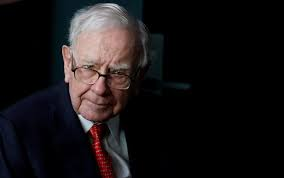

À frente da Berkshire, Buffett tem batido consistentemente os índices S&P 500 e Dow Jones, por décadas, ao aplicar os conceitos de value investing e gestão de risco para multiplicar seu capital. Seu retorno médio de mais de 20% ao ano nas últimas cinco décadas e suas lições de vida renderam a Warren Buffett o apelido de “Oráculo de Omaha”, em referência à cidade do meio-oeste americano onde ele vive. O investidor também coleciona frases espirituosas. “Invista em negócios que qualquer idiota pode comandar porque, um dia, algum idiota pode fazer isso”, é uma delas. Outra: “A diferença entre pessoas bem-sucedidas e pessoas realmente bem-sucedidas é que as realmente bem-sucedidas dizem não para quase tudo”.
Warren Buffet é considerado um dos maiores investidores da história, tendo alcançado o posto de homem mais rico do mundo mais de uma vez, graças aos seus investimentos. Por isso, é pouco provável que o nome de Warren Buffett não seja citado, pelo menos uma vez, por qualquer empresa ou profissional que atue no mercado financeiro. Pai do value investing, referência quando o assunto é análise fundamentalista e um verdadeiro guru para centenas de milhares de investidores ao redor do mundo, Warren Buffett é um dos personagens mais inspiradores quando falamos em investimentos.
Quase todo mundo que se interessa por negócios, investimentos e mercado financeiro já se deparou algum dia com o nome de Warren Buffett. Fazer referência a Buffett nestes contextos é justificável quando consideramos a genialidade deste investidor. Buffett não se faz presente apenas em conversas sobre investimentos ou na lista dos investidores mais lendários de todos os tempos. Ele também faz parte do ranking dos homens mais ricos do mundo. Por isso, suas frases e ensinamentos são passados para todos aqueles que almejam atingir o mesmo patamar que ele conseguiu atingir: o sucesso financeiro e pessoal.
Buffett, ou Warren Edward Buffett, é reconhecido mundialmente como grande investidor do mercado financeiro e como filantropo americano focado em realizar iniciativas sociais. Além disso, Warren também é presidente do conselho, principal acionista e diretor executivo da empresa Berkshire Hathaway. Ele já entrou para a lista das pessoas mais ricas do mundo diversas vezes. Mas seu auge ocorreu em 2008, quando seu nome estampou o primeiro lugar. Mas não é apenas por esse fato que Buffett é tão admirado. Além disso, seu lado filantrópico se destaca pelas iniciativas sociais firmadas junto com diversos bilionários, como o Bill Gates. Dentre seus trabalhos filantrópicos está a promessa de doação chamada de “Giving Pledge”. Trata-se de um projeto criado por Gates com o intuito de estimular bilionários a doarem pelo menos a metade de todo o seu patrimônio para ações sociais. O projeto sugere que os bilionários realizem a doação em vida ou em testamentos.